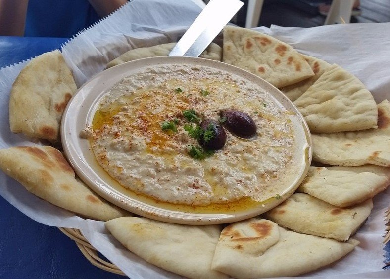

When you first step into the grounds of Keifer’s, for a moment, you forget that you are in the heart of Mississippi. Here, you encounter a space that delicately intertwines the hospitable spirit of the American South with the authenticity of Mediterranean harbors. This restaurant resembles a dignified old house that seems to have emerged from Jackson’s history, yet at its core, it keeps the vibrant atmosphere of a Greek "Taverna" alive
A Porch Between Two Worlds
As you make your way toward the famous Patio, the first thing you feel is a gentle breeze stirred by large ceiling fans. This porch is a curious crossroads; the building’s architecture, reminiscent of classic American homes, is paired with a layout that evokes seaside restaurants in Greece. The high ceilings and traditional railings of the porch create a cozy sanctuary where you can immerse yourself in a peaceful atmosphere for hours, far from the city’s hustle.
Around you, tropical trees and lush vegetation have built a living green wall. These plants not only spread a pleasant shade over your head but also reinforce the sensation of being in a Mediterranean climate with every gust of wind. Watching the contrast between the green foliage and the sturdy columns of the building offers an insight into a cultural coexistence rarely experienced elsewhere.
A Feast of Flavors in an Intimate Atmosphere
As you sit in this semi-open space, the aroma of warm pita bread and meats seasoned with Greek spices reaches you. Here, everything is authentic in its simplicity. You find yourself in an environment that is neither fully American nor fully Greek, but rather a "third identity" born from the fusion of the two. The intimacy flowing through the air—that sense of "hominess" which is a hallmark of Southern culture—is tied to the generosity of Greek tables. When plates of Hummus and Gyro sandwiches appear on your table, you realize that this space is not just a restaurant, but a bridge that has placed two distant cultures side-by-side in a memorable frame.
An Experience Beyond a Meal
Ultimately, when you leave Keifer’s, a sense of calm and satisfaction accompanies you. You haven’t just eaten a delicious meal; you’ve spent moments in a space where traditional architecture and tropical nature have narrated a story of the union of civilizations for you. This is a place where you can rediscover the joy of simplicity under the shade of trees and the grandeur of a classic porch.
🍴 The Must-Haves
If you are stepping into this American-Greek fusion space for the first time, this combination offers the best experience:
• Appetizer (The Star of the Menu): Hummus with Hot Pita. You must undoubtedly try their famous hummus. The warm pita breads served alongside hummus drizzled with olive oil are the restaurant's signature.
• Main Course: Gyro SandwichA traditional sandwich with thin layers of meat and fresh vegetables. If you love cheese, the
• Essential Side: Cottage Fries with Feta Dressing. Be sure to order the crispy circular fries, but the real secret is the
• Lighter Option: Chicken Breast Sandwich. For those who prefer the classic grilled taste over traditional gyros.
✅ Pros
• Authenticity in Flavor: Consistency in the quality of hummus and handmade sauces over the years has turned this restaurant into a local icon.
• Unrivaled Atmosphere (Greek Porch): The fusion of classic Southern home architecture with a Mediterranean soul and the presence of tropical trees creates a space that is relaxing for both business lunches and friendly gatherings.
• Fair Pricing: Given the quality of ingredients and the Downtown location, the prices are considered very reasonable by customers.
• Freshness of Ingredients: The use of warm pita bread and fresh vegetables in sandwiches is a prominent feature of every plate.
❌ Cons
• Inconsistency in Service: The most serious criticism is the slow service during certain hours (even off-peak times) and the need for personal follow-up for items like drink refills.
• Limited Operating Hours: The main Downtown branch is only open during lunch and on weekdays, making it inaccessible for many during weekends or for dinner.
Final Summary
If you are looking for a place where the calm, green space of the porch matters as much as the taste of the hummus, Keifer’s is an excellent choice—provided you bring a little patience for the service along with your appetite for Mediterranean tranquility.
← Back to Mississippi Lead